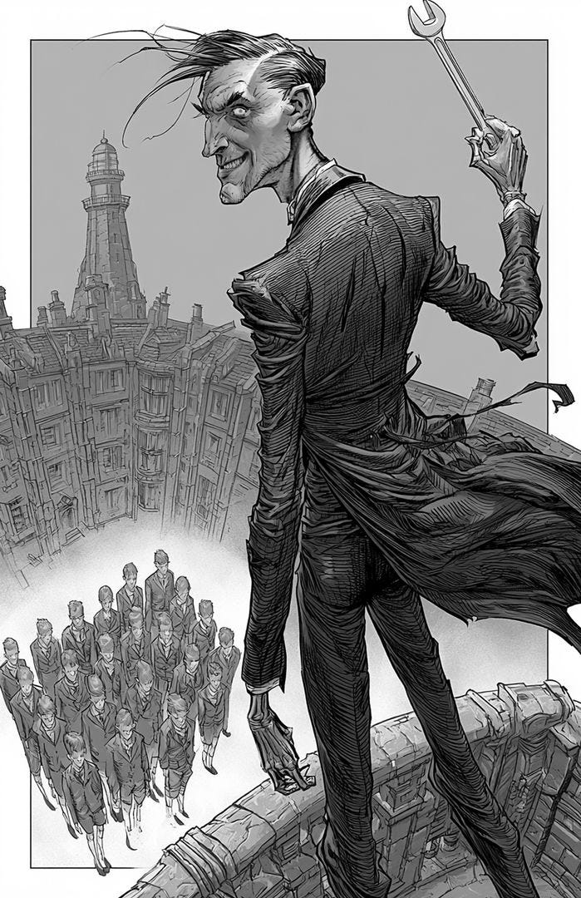

The Clockwork Terror of Blackglass Island
Felix Jones is the kind of kid who builds a frequency scanner from broken library barcode readers and uses them to forge permission slips. He was supposed to spend a weekend looking at old clocks on a tidal island. He was told it would be educational.
Pre-order · Releases 24 July 2026
Out 24 July 2026 · Free on Kindle Unlimited at launch
About the Book
When Felix’s Year 7 class arrives at the Museum of Time and Tides on fog-locked Blackglass Island, something is immediately wrong. The curator, Archibald Rook, doesn’t blink. Ever. The classmates who were arguing and throwing scotch eggs twenty minutes ago are now breathing in perfect synchronisation. And beneath the volcanic rock, something is ticking — a deep, rhythmic pulse that Felix can feel in the back of his skull, and that keeps trying to sand away all his best ideas.
Rook has been planning this visit for a very long time. Blackglass Island isn’t a museum. It’s a machine — a lighthouse built around a shard of alien crystal that broadcasts a frequency capable of rewriting human thought into clockwork obedience. All he needs is enough brains to run it at full power. Thirty-two Year 7 students will do nicely.
Felix and his best friend William are the only ones the signal can’t reach — a boy who builds things from broken parts, and a boy who knows the statistical probability of everything they’re about to try, against a curator who wants to silence the entire world. Armed with a Victorian signal cannon, a jar of brass nuts and bolts, and one very loud, very inconvenient brain, Felix is going to have to make a lot of noise.
The Clockwork Terror of Blackglass Island is the second adventure in the Felix Jones series — same rule as the first: every chapter needs a reason to keep reading. No lectures, no detours, no easy outs.
are reading-age boys (and the adults who remember being them). If The Weird Map in Mr Glimm’s Skull earned the late-night torch under the duvet, this one hands Felix a signal cannon and a museum full of clockwork trouble.
Like the Sound of This?
Drop your email and you’ll get the free Crude novella, plus the first chapter of The Clockwork Terror of Blackglass Island before launch and early access across the catalogue.